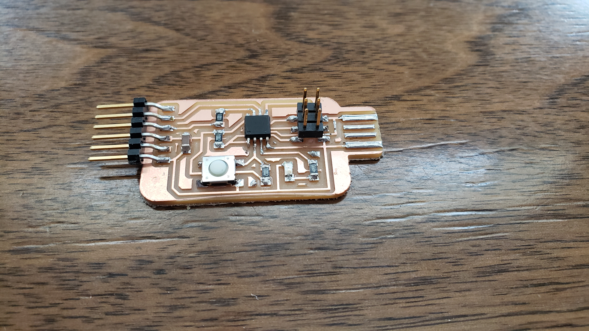
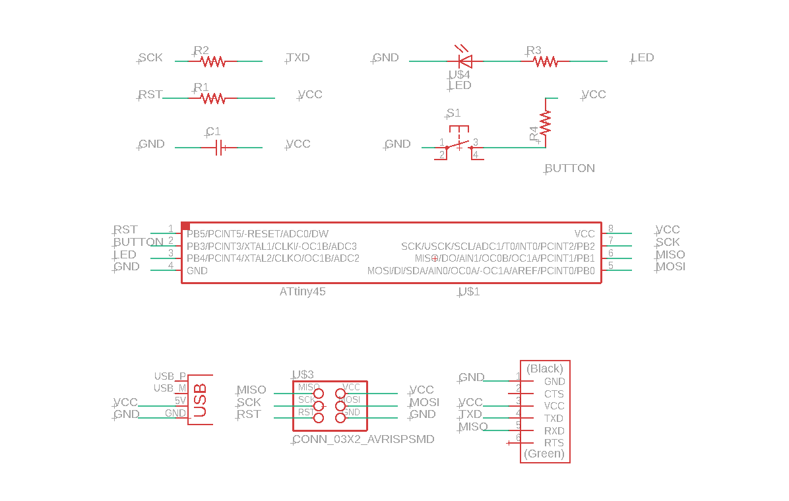
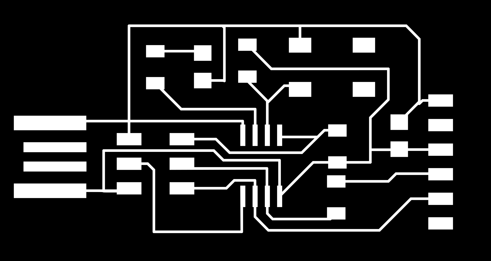
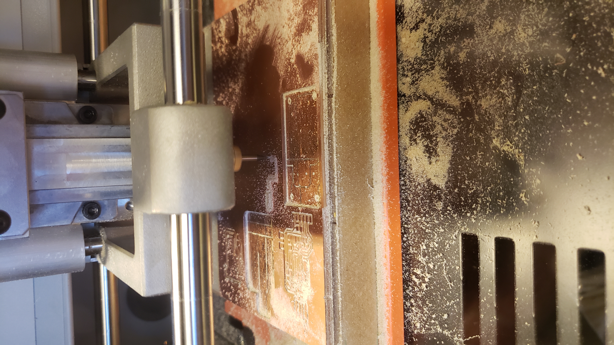
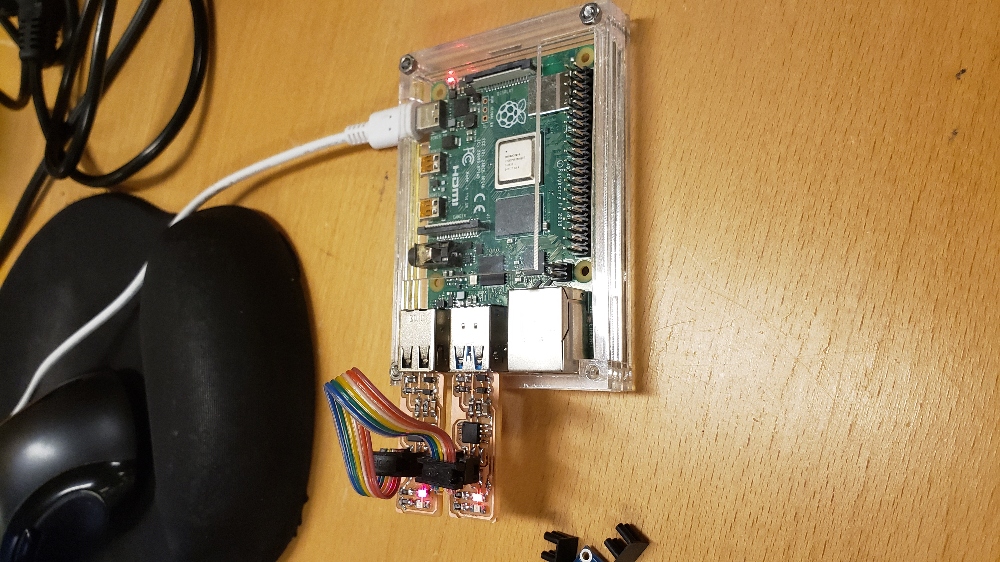
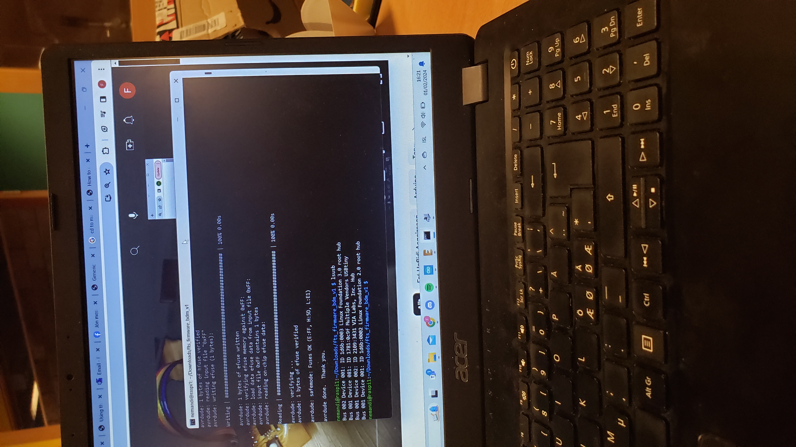
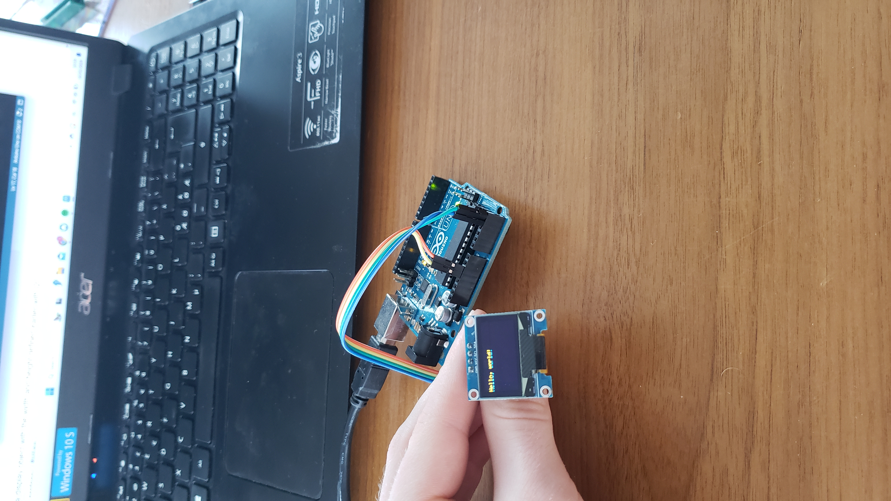
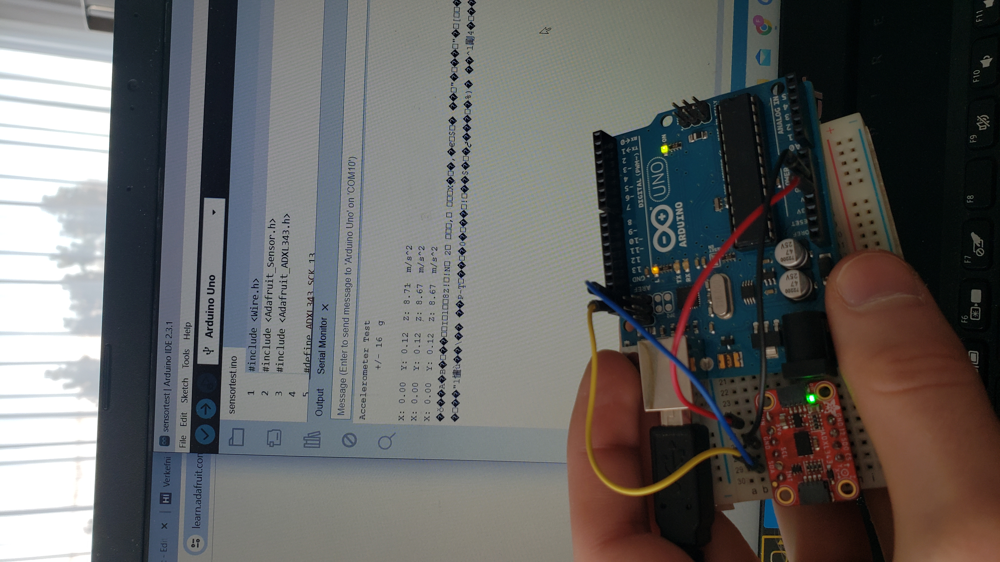

Project 1 - Manufacturing, Designing and Programming embedded systems.
Project description
The project is split into 5 subprojects which are intertwined:- Circuit design
- Manufacturing electronic circuits
- Programming microcontrollers
- Use of output devices
- Use of input devices
What is needed for the project?
Software- Autodesk Eagle (For PCB design)
- Inkscape (For PCB board machining)
- Arduino IDE (For programming)
- Brian FabISP
- Hafliði Ásgeirsson youtube channel (course teacher)
- CNC - machine
- PCB components (see Brian FabISP)
- Multimeter (for mesuring circuit connections)
- Arduino UNO or simmilar
- Soldering iron and tin
Circuit design

I designed the circuit in Autodesk Eagle and used Hafliði´s youtube video as guidance. Following the steps in the youtube video should be sufficient to design the circuit, although running into small computer errors is unavoidable. Then I recommend JFGI (just fucking googling it) that usually works within a few minutes. However if it goes unsolved for more than 10-15 minutes and frustration is begining to build up I reccomend asking a fellow student first and then asking the teachers, as teachers connstantly have to answer stupid questions. This part of the project was rather easy compared to other parts of the project and it took the least amount of time (approximately 6 hours). I do not remember any specific obstacles except that I made the circuit to big the first time and had to shrink it (make it more compact) before manufacturing.
Manufacturing electronic circuits
 
After the design is completed the circuit must be preprocessed before being manufactured. We start by turning off all layers except top in Eagle and then export image file. This image is imported into Inkscape where it is fitted to the Traces PNG from Brian FabISP to make sure it has not undergone any resizing. Extra material is then removed to make it more compact and the edges rounded. When both traces and outline images are complete they are exported and imported into MIT PNG to g-code where a few factors need to be set acording to the CNC-machine being used. This is the last preprocessing step before manufacturing.
Adjusting the CNC-machine.
The CNC-machine used for cutting the traces and outline was from Roland. I started by transfering the g-code files to the computer connected to the CNC-machine. Then the right mill was selected for the traces (the smaller one) and the coordinate system adjusted to make sure no extra material would be wasted. The zero point was set and the mill fastened so that it was touching the copper. Then the mill was moved 2mm upp and the milling could begin. After milling the traces the mill was switched for the bigger one to mill the outline.
Programming microcontrollers
 The Arduino IDE was used to program both the ISP and the arduino UNO. The ISP was pre-programmed with RasperyPI through SSH. That took a bit longer than expected, it was not working at first so I double checked all the connections with a multimeter and Hafliði did the same and found no error. Later I found out that the USB connection was not good enough and it had to be placed exactly right for the connection to work.
Use of output and input devices
 I used an Oled screen for output device which worked well and I had no problems with. Then I used an accelerometer for an input device which did not work as planned. It only showed the first 2 to 3 measurements and then complete nonsense after that. The plan was to show the acceleration on the Oled screen but since I did not get the accelerometer to work propperly I was unable to do that.